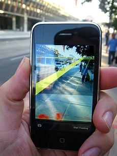

La realidad aumentada (RA) es el término que se usa para describir al conjunto de tecnologías que permiten que un usuario visualice parte del mundo real a través de un dispositivo tecnológico con información gráfica añadida por este. El dispositivo, o conjunto de dispositivos, añaden información virtual a la información física ya existente, es decir, una parte virtual aparece en la realidad. De esta manera los elementos físicos tangibles se combinan con elementos virtuales, creando así una realidad aumentada en tiempo real.1 El término empezó a usarse en 1992.
